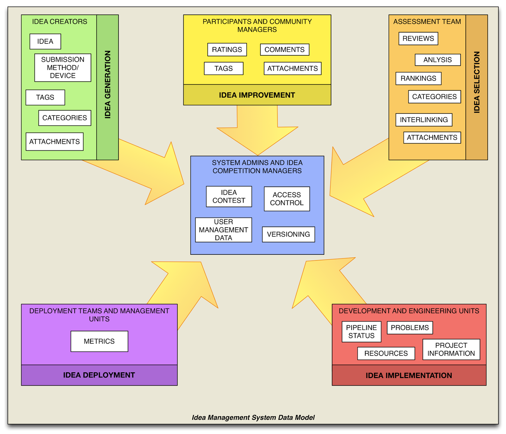

Database Relasional – Konsep, Aplikasi dan Jenisnya

written by Irvandi
Database relasional merupakan jenis Database Management System (DBMS) yang terbaru, yang memberikan gambaran atau bagam skema yang menjelaskan tentang hubungan antar tabel bisa dilakuan di dalam sebuah database. Model database ini digagas oleh seorang pakar database bernama EF codd.
Jenis database relasional ini merupakan jenis database yang paling sederhana disamping jenis database pendahulunya yaitu database Hierarki (Hierarchical Database Model), dan database Jaringan (Network Database Model). Jenis database relasional menggunakan strukrur database 2D (dimensi). Perlu diketahui bahwa kedua model pendahulu relasional database yaitu database hirarki dan database jaringan untuk saat ini sudah tidak banyak digunakan, hal ini karena adanya berbagai kelemahan dan fungsionalitas yang ada dari kedua jenis database tersebut yang sudah memenuhi spesifikasj atau kebutuhan aplikasi modern saat ini, yang menuntut sistem database yang lebih kompleks dan terstruktur untuk memenuhi berbagai kebutuhan komputasi skala besar saat ini, baik dalam skala personal maupun Enterprise.
Bagaimana Relasi Database bisa Terhubung ?
Untuk membuat sistem basis data yang terpadu kita perlu menghubungkan terlebih dahulu kedua tabel yang ingin Kita dikoneksikan. Untuk setiap tabel yang ada terdapat field kunci atau primary key, primary key ini dikoneksikan padatabel kedua sehingga di tabel kedua ini menjadi foreign key. Dengan relational database ini Kita cukup mengubungkan kedu tabel yang ada melalui foreign key.
Konsep RDBMS
Ilmu yang mempelajari tentang konsep Database Relasional disebut Database Relational System. Database relasional System merupakan konsep yang muncul setelah adanya konsep database pendahulunya yaitu network database dan hierarchycal database. Dalam jenis database relasional ini, ada penggambaran yang jelas tentang hubungan suatu tabel dengan tabel yang lain bisa dilakukan, hubungan ini digambarkan dengan garis solid yang menghubungkan antara satu field name di tabel yang satu, dengan satu fieldname di tabel yang lain. Misalnya fieldname kdpasien di tabel pasien dengan fieldname kdpasien di tabel diagnosapasien, yang saling terhubung karena adanaya kesamaan dalam fungsi dan entitas dari objek yang dimaksud. Dengan demikian, sebuah database relasional ini dirancang untuk memiliki keterkaitan antar tabelnya, menyesuaikan dengan program atau analisa sistem yang dirancang.
Aplikasi RDBMS
Untuk diketahui Database adalah sekumpulan tabel yag disimpan dalam bentuk file/elektronik dan dikelompokkan berdasarkan skema yang sudah dibuat oleh user. Untuk melakukan pembuatan struktur, pengisian, pengeditan, dan penghapusan database diperlukan software atau perangkat lunak, dan jenis perangkat lunak yang dimaksud adalah RDBMS atau disebut Relational Database Management System. Sedangkan command yang diterapkan untuk melakukan berbagai manipulasi terhadap database dan tabel yang ada di software RDBMS disebut SQL (Structured Query Language).
RDBMS adalah sebuah software komputer yang digunakan untuk membuat, menyunting dan menanajemen basis data yang telah mendukung skema relational. Pemanfaatan program ini sangat banyak sekali contohnya, misalnya dalam sistem apoteker, sistem penyewaan (Rental) mobir, sistem penjualan barang, sistem kepustakaan, sistem pertokoan, dan masih banyak lagi. RDBMS sendiri memiliki tingkatan sesuai skala yang akan digunakan, ada RDBMS yang digunakan untuk small-scale database semisal aplikasi stock sederhana, aplikasi perpustakaan, dan ada aplikasi large-scale database yaitu aplikasi RDBMS dengan skala yang lebih luas mencakup kebutuhan enteprise, contohnya adalah aplikasi Oracle yang digunakan untuk menangani kebutuhan akan manajemen Perusahaan berskala besar (dengan jumlah record yang sangat besar).
Secara umum ada 3 jenis database relasional yaitu :
1. One to One (1 to 1)
Relasi database model ini terjadi apalabila sebuah data terdapat pada 2 buah tabel, dan hanya diperbolehkan satu data saja pada masing masing tabel (unique record), sama halnya seperti primary key, record yang ada pada model ini tidak boleh ada yang sama.
2. One to Many (1 to n)
Relasi database model ini membolehkan data yang sama pada tabel kedua, tapi hanya membolehkan data yang bersifat unique (unik) pada tabel pertama. Jadi pada model tabel kedua boleh memiliki beberapa data yang sama.
3. Many to many (n to m)
Berbeda dengan kedua model diatas, relasi database model ini membolehkan beberapa data yang sama baik pada tabel pertama maupun tabel kedua. Dengan demikian tidak ada unique record di kedua tabel tersebut.
Tujuan model relasional database
Menciptakan konsep database DBMS yang terintegrasi dan bersifat standalone
Menciptakan DBMS yang konsisten dan menghindari terjadinya data redundancy (duplikasi data) dengan menerapkan konsep normalisasi data, dengan tujuan untuk meningkatkan kemampuan dalam mengambil dan juga memproses data.
Karakteristik Database Relasional
Struktur tabel bersifat Tabular
Satu bahasa pemrograman atau sintaksis yang ada dapat digunakan untuk semua user
Field dikoneksikan melalui value didalam record tabel
Kelebihan Database Relasional
Model tampilan / View Tabular dan Query nya berupa table
Tidak adanya variabel pointer
Kemampuan operator yang baik
User-friendly
Istilah Basis Data
Beberapa istilah data yang umumnya ditemui :
1. Entitas
Entitas adalah objek yang direkam sebagai data di dalam konsep database sendiri, jadi entity ini merujuk pada object yang hendak dijadikan data yang akan disimpan (bukan nama tabel atau field), sebagai contoh dalam entity perpustakaan yaitu buku, penerbit, pengarang, dsb.
2. Field
Setiap entity mempunyai field atau kolom yang mewakili isi datanya. Dalam dunia programming ini disebut atribut.
3. Record
Record adalah kumpulan data yang terdiri dari sekumpan field. Record merupakan satuan informasi database yang berisi satu unit data konkrit.
4. Data Value
Jika record merupakan satuan data konkrit, maka data value / nilai merupakan satuan data terkecil yang berisi hanya nilai pada field tertentu.
Demikianlah ulasan dari artikel Database Relasional. Semoga artikel ini bisa memberi pengetahuan dan wawasan tambahan terhadap para pembaca sekalian akan database relasional ini. Dengan demikian pembaca mampu memiliki gambaran dan wawasan yang cukup untuk mengenal dan membuat rancangan database relasional untuk keperluan dalam pengembangan aplikasi yang akan dirancangnya atau dibuatnya.